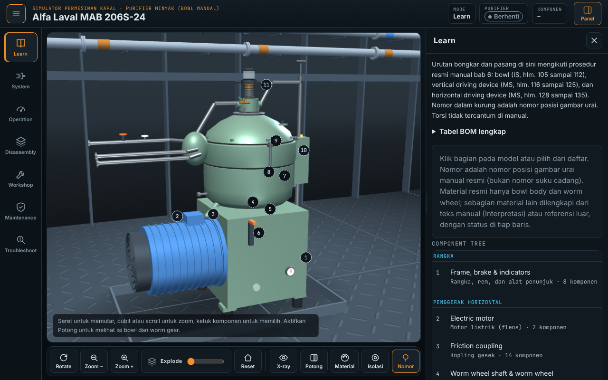
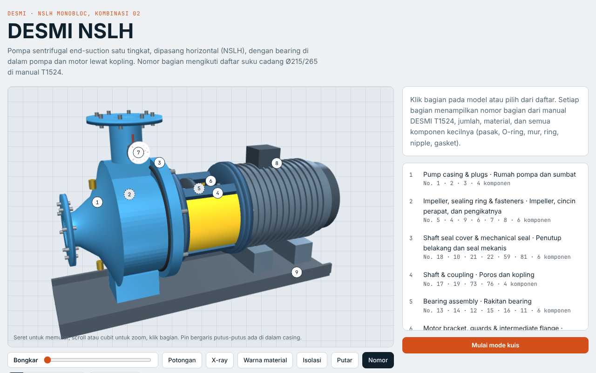
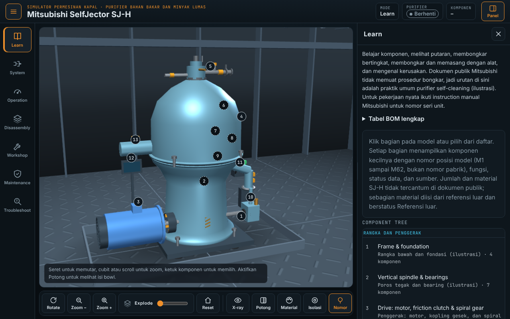
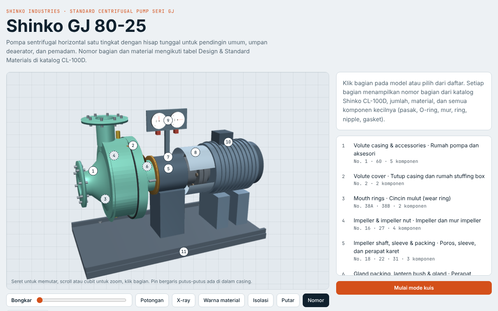
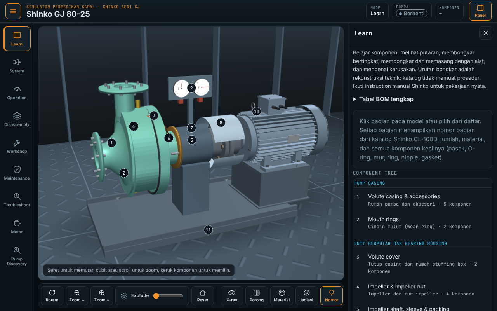
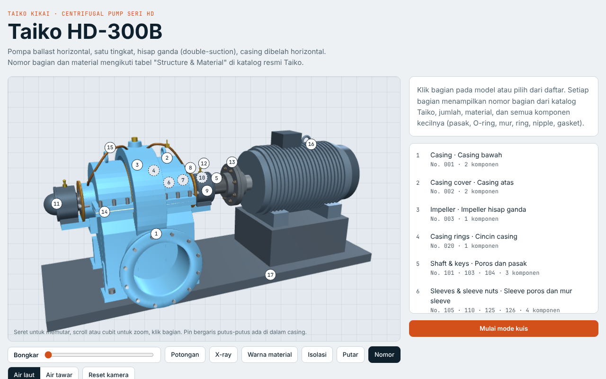
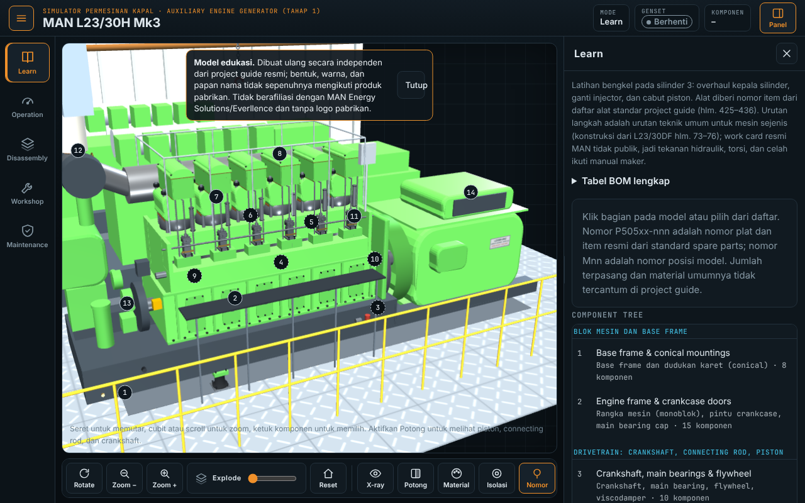
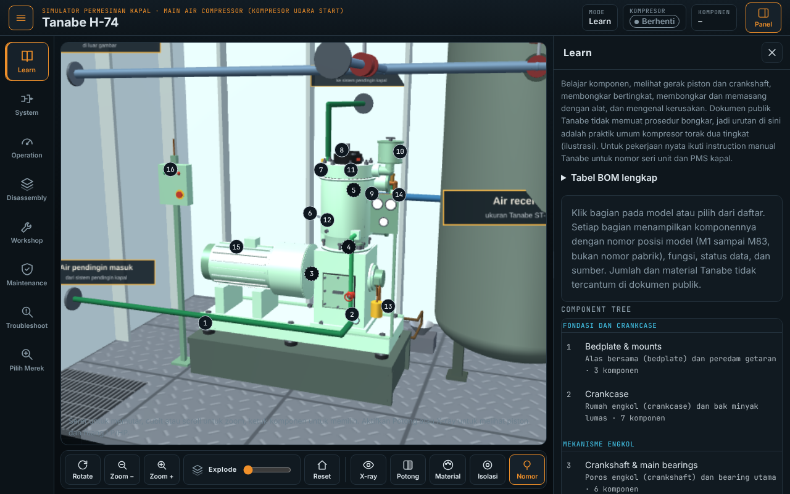

Pratinjau semua mesin (8 model)
Dibuat 2026-11-20 oleh npm run pratinjau dari main dan semua branch. Tiap berkas berdiri sendiri; three.js dimuat dari CDN, jadi perlu internet.

Alfa Laval MAB 206S-24Purifier minyak bowl manual, mode simulator: nomor posisi dari gambar urai resmi, prosedur bengkel bab 6, nomogram gravity disc, trouble-tracing resmimain · 2026-11-20
DESMI NSLHPompa end-suction monobloc dengan bearing, 35 nomor bagian (manual T1524)main · 2026-11-20
Mitsubishi SelfJector SJ-HPurifier bahan bakar dan minyak lumas, mode simulator: separasi, gravity disc, sludge discharge, bengkel virtual (data resmi terbatas; bentuk 3D ilustrasi)main · 2026-11-20
Shinko GJ 80-25Pompa pendingin horizontal satu tingkat (katalog CL-100D)main · 2026-11-20
Shinko GJ 80-25Mode simulator: antarmuka simulator kamar mesin, bengkel virtual, bongkar dan pasang (katalog CL-100D)main · 2026-11-20
Taiko HD-300BPompa ballast hisap ganda, split casing (katalog resmi Taiko)main · 2026-11-20
MAN L23/30H Mk3Auxiliary engine generator 6 silinder, mode simulator tahap 1: struktur sampai komponen kecil, gerak piston dan valve sinkron (firing order dan arah putar resmi), kamar mesin, bengkel virtual (project guide resmi)branch claude/aux-engine-generator · 2026-11-19
Tanabe H-74Main air compressor (kompresor udara start) dua tingkat, mode simulator: ruang mesin dan air receiver, alur udara bernomor, operasi start-stop otomatis, bengkel virtual, troubleshooting (data resmi Tanabe terbatas; bentuk 3D ilustrasi)branch claude/air-compressor · 2026-11-19